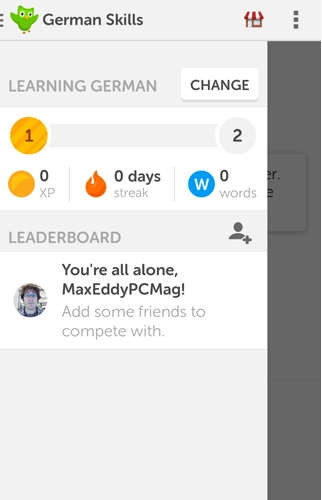
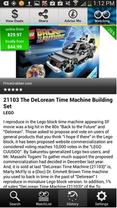

Une application attrayante
Comme dans tout processus de création d'une application, il est capital de travailler sur le design et d'en faire quelque chose de agréable. C'est une marque de respect pour le visiteur que de lui offrir une interface attrayante. Cependant, avant même que l'internaute ne visite l'application, il est capital de rendre l'icône attractif. C'est la porte d'entrée vers l'application. Sur un ordinateur, l'internaute peut se baser sur le résumé des moteurs de recherche pour se faire une idée, mais pas sur un téléphone portable ou une tablette.
Une fois dans l'application, cette dernière doit continuer d'honorer la promesse de bonne qualité énoncée via l'icône. De petites annimations, des aides ou des personnages peuvent apporter une touche de fantasie à l'ensemble qui se doit d'être agréable et simple à parcourir. Le but est que l'internaute identifie l'icône à une application qui lui plaise puis qu'il y revienne plusieurs fois. Si l'application est à but lucratif, c'est un gain de bénéfices.
Duolingo
 L'application Duolingo est un bon exemple d'application attrayante. Il s'agit d'une application pour apprendre les langues étrangères (l'allemand dans l'exemple ci-contre). La page est épurée, claire, l'utilisateur peut s'y retrouver facilement. De plus, le logo en forme de hibou vert apporte une petite touche de légèreté et offre un petit compagnon de route sympathique à l'apprenant.
ShopAdvisor
 ShopAdvisor est une application de vente, ou plutôt il s'agit d'un comparateur de prix. Elle est assez bien travaillée du côté du desgin et du feedback. Cependant, elle comporte énormément de texte, dans une police assez petite, ce qui peut fatiguer les yeux. Il aurait peut-être fallut grossir la police ou mettre moins de texte pour rendre l'application plus facile à lire et plus attrayante.